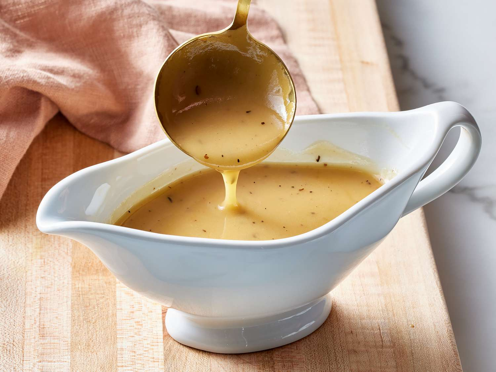

Gravy

No roast dinner is complete without a jug of proper gravy. Pour liberally.
INGREDIENTS
- meat juices
- 2 tbsp liquid meat fat
- 30 g/1oz plain flour
- 570 ml/1 pint stock
- 2 tsp gravy browning (optional)
STEPS
- Collect the juices and the fat from the meat you are roasting. Put the juices in a glass jug and allow to stand for a few minutes so that the fat will rise to the surface. Skim off the fat.
- Put the roasting tin that you used to cook the meat on the hob on a medium heat and add the fat. (The meat needs to be resting, covered with foil, in a warm place at this point)
- Stir in the flour and cook for 1 minute.
- Stir in the meat juices and gradually stir in the stock until you get a smooth gravy. Use a wooden spoon and stir all over the surface of the pan to incorporate any meat juices that are stuck to it.
- Bring to the boil and allow to simmer for 10 minutes.
- Season to taste and add a little gravy browning if desired.